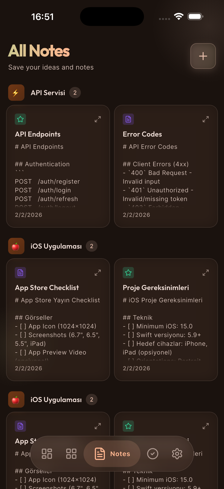

Tüm projeler
iOS & Android uygulaması
ProjectX
Geliştiriciler için mobil uygulama notları, sürüm planlaması ve mağaza görev yöneticisi.
YayındaFlutter ile geliştirildi
Hayatı kolaylaştıran
detaylar.
Uygulama bazlı modüler notlar ve kontrol listeleri
App Store ve Google Play sürüm hazırlık takibi
Kritik hata, test ve özellik panosu
Karanlık mod ve modern akıcı arayüz
Cihazda güvenli yerel veri saklama
Ekran ekran keşfet.
Uygulamanın içinden gerçek görünümler.
